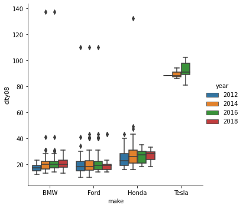

第5章：探索式資料分析
Contents
第5章：探索式資料分析¶
摘要統計資訊¶
import pandas as pd
import numpy as np
# pd.set_option('max_columns', 4, 'max_rows', 10, 'max_colwidth', 12)
fueleco = pd.read_csv('data/vehicles.csv.zip')
fueleco
/var/folders/j9/71c8r2vs343cb9329xbww0240000gn/T/ipykernel_1748/679157276.py:5: DtypeWarning: Columns (70,71,72,73,74,76,79) have mixed types. Specify dtype option on import or set low_memory=False.
fueleco = pd.read_csv('data/vehicles.csv.zip')
| barrels08 | barrelsA08 | charge120 | charge240 | city08 | city08U | cityA08 | cityA08U | cityCD | cityE | ... | mfrCode | c240Dscr | charge240b | c240bDscr | createdOn | modifiedOn | startStop | phevCity | phevHwy | phevComb | |
|---|---|---|---|---|---|---|---|---|---|---|---|---|---|---|---|---|---|---|---|---|---|
| 0 | 15.695714 | 0.0 | 0.0 | 0.0 | 19 | 0.0 | 0 | 0.0 | 0.0 | 0.0 | ... | NaN | NaN | 0.0 | NaN | Tue Jan 01 00:00:00 EST 2013 | Tue Jan 01 00:00:00 EST 2013 | NaN | 0 | 0 | 0 |
| 1 | 29.964545 | 0.0 | 0.0 | 0.0 | 9 | 0.0 | 0 | 0.0 | 0.0 | 0.0 | ... | NaN | NaN | 0.0 | NaN | Tue Jan 01 00:00:00 EST 2013 | Tue Jan 01 00:00:00 EST 2013 | NaN | 0 | 0 | 0 |
| 2 | 12.207778 | 0.0 | 0.0 | 0.0 | 23 | 0.0 | 0 | 0.0 | 0.0 | 0.0 | ... | NaN | NaN | 0.0 | NaN | Tue Jan 01 00:00:00 EST 2013 | Tue Jan 01 00:00:00 EST 2013 | NaN | 0 | 0 | 0 |
| 3 | 29.964545 | 0.0 | 0.0 | 0.0 | 10 | 0.0 | 0 | 0.0 | 0.0 | 0.0 | ... | NaN | NaN | 0.0 | NaN | Tue Jan 01 00:00:00 EST 2013 | Tue Jan 01 00:00:00 EST 2013 | NaN | 0 | 0 | 0 |
| 4 | 17.347895 | 0.0 | 0.0 | 0.0 | 17 | 0.0 | 0 | 0.0 | 0.0 | 0.0 | ... | NaN | NaN | 0.0 | NaN | Tue Jan 01 00:00:00 EST 2013 | Tue Jan 01 00:00:00 EST 2013 | NaN | 0 | 0 | 0 |
| ... | ... | ... | ... | ... | ... | ... | ... | ... | ... | ... | ... | ... | ... | ... | ... | ... | ... | ... | ... | ... | ... |
| 39096 | 14.982273 | 0.0 | 0.0 | 0.0 | 19 | 0.0 | 0 | 0.0 | 0.0 | 0.0 | ... | NaN | NaN | 0.0 | NaN | Tue Jan 01 00:00:00 EST 2013 | Tue Jan 01 00:00:00 EST 2013 | NaN | 0 | 0 | 0 |
| 39097 | 14.330870 | 0.0 | 0.0 | 0.0 | 20 | 0.0 | 0 | 0.0 | 0.0 | 0.0 | ... | NaN | NaN | 0.0 | NaN | Tue Jan 01 00:00:00 EST 2013 | Tue Jan 01 00:00:00 EST 2013 | NaN | 0 | 0 | 0 |
| 39098 | 15.695714 | 0.0 | 0.0 | 0.0 | 18 | 0.0 | 0 | 0.0 | 0.0 | 0.0 | ... | NaN | NaN | 0.0 | NaN | Tue Jan 01 00:00:00 EST 2013 | Tue Jan 01 00:00:00 EST 2013 | NaN | 0 | 0 | 0 |
| 39099 | 15.695714 | 0.0 | 0.0 | 0.0 | 18 | 0.0 | 0 | 0.0 | 0.0 | 0.0 | ... | NaN | NaN | 0.0 | NaN | Tue Jan 01 00:00:00 EST 2013 | Tue Jan 01 00:00:00 EST 2013 | NaN | 0 | 0 | 0 |
| 39100 | 18.311667 | 0.0 | 0.0 | 0.0 | 16 | 0.0 | 0 | 0.0 | 0.0 | 0.0 | ... | NaN | NaN | 0.0 | NaN | Tue Jan 01 00:00:00 EST 2013 | Tue Jan 01 00:00:00 EST 2013 | NaN | 0 | 0 | 0 |
39101 rows × 83 columns
fueleco.describe().T
| count | mean | std | min | 25% | 50% | 75% | max | |
|---|---|---|---|---|---|---|---|---|
| barrels08 | 39101.0 | 17.442712 | 4.580230 | 0.06 | 14.330870 | 17.347895 | 20.115000 | 47.087143 |
| barrelsA08 | 39101.0 | 0.219276 | 1.143837 | 0.00 | 0.000000 | 0.000000 | 0.000000 | 18.311667 |
| charge120 | 39101.0 | 0.000000 | 0.000000 | 0.00 | 0.000000 | 0.000000 | 0.000000 | 0.000000 |
| charge240 | 39101.0 | 0.029630 | 0.487408 | 0.00 | 0.000000 | 0.000000 | 0.000000 | 12.000000 |
| city08 | 39101.0 | 18.077799 | 6.970672 | 6.00 | 15.000000 | 17.000000 | 20.000000 | 150.000000 |
| city08U | 39101.0 | 5.040648 | 10.462790 | 0.00 | 0.000000 | 0.000000 | 0.000000 | 150.000000 |
| cityA08 | 39101.0 | 0.569883 | 4.297124 | 0.00 | 0.000000 | 0.000000 | 0.000000 | 145.000000 |
| cityA08U | 39101.0 | 0.416097 | 4.093495 | 0.00 | 0.000000 | 0.000000 | 0.000000 | 145.083500 |
| cityCD | 39101.0 | 0.000560 | 0.045392 | 0.00 | 0.000000 | 0.000000 | 0.000000 | 5.350000 |
| cityE | 39101.0 | 0.225181 | 3.180894 | 0.00 | 0.000000 | 0.000000 | 0.000000 | 122.000000 |
| cityUF | 39101.0 | 0.000975 | 0.022785 | 0.00 | 0.000000 | 0.000000 | 0.000000 | 0.896000 |
| co2 | 39101.0 | 72.538989 | 163.252019 | -1.00 | -1.000000 | -1.000000 | -1.000000 | 847.000000 |
| co2A | 39101.0 | 5.543950 | 55.956932 | -1.00 | -1.000000 | -1.000000 | -1.000000 | 713.000000 |
| co2TailpipeAGpm | 39101.0 | 17.826864 | 93.937414 | 0.00 | 0.000000 | 0.000000 | 0.000000 | 713.000000 |
| co2TailpipeGpm | 39101.0 | 470.704841 | 122.351021 | 0.00 | 386.391304 | 459.000000 | 535.789474 | 1269.571429 |
| comb08 | 39101.0 | 20.323828 | 6.882807 | 7.00 | 17.000000 | 20.000000 | 23.000000 | 136.000000 |
| comb08U | 39101.0 | 5.652724 | 11.231748 | 0.00 | 0.000000 | 0.000000 | 0.000000 | 136.000000 |
| combA08 | 39101.0 | 0.631160 | 4.395797 | 0.00 | 0.000000 | 0.000000 | 0.000000 | 133.000000 |
| combA08U | 39101.0 | 0.453725 | 4.131767 | 0.00 | 0.000000 | 0.000000 | 0.000000 | 133.266200 |
| combE | 39101.0 | 0.230912 | 3.244463 | 0.00 | 0.000000 | 0.000000 | 0.000000 | 121.000000 |
| combinedCD | 39101.0 | 0.000459 | 0.040759 | 0.00 | 0.000000 | 0.000000 | 0.000000 | 4.800000 |
| combinedUF | 39101.0 | 0.000959 | 0.022392 | 0.00 | 0.000000 | 0.000000 | 0.000000 | 0.888000 |
| cylinders | 38956.0 | 5.729105 | 1.754487 | 2.00 | 4.000000 | 6.000000 | 6.000000 | 16.000000 |
| displ | 38958.0 | 3.309829 | 1.361925 | 0.00 | 2.200000 | 3.000000 | 4.300000 | 8.400000 |
| engId | 39101.0 | 8582.377382 | 17606.675590 | 0.00 | 0.000000 | 202.000000 | 4401.000000 | 69102.000000 |
| feScore | 39101.0 | 0.122580 | 2.516348 | -1.00 | -1.000000 | -1.000000 | -1.000000 | 10.000000 |
| fuelCost08 | 39101.0 | 2242.470781 | 601.273869 | 500.00 | 1850.000000 | 2250.000000 | 2500.000000 | 6850.000000 |
| fuelCostA08 | 39101.0 | 91.335260 | 479.485802 | 0.00 | 0.000000 | 0.000000 | 0.000000 | 3850.000000 |
| ghgScore | 39101.0 | 0.120866 | 2.512612 | -1.00 | -1.000000 | -1.000000 | -1.000000 | 10.000000 |
| ghgScoreA | 39101.0 | -0.923889 | 0.651017 | -1.00 | -1.000000 | -1.000000 | -1.000000 | 8.000000 |
| highway08 | 39101.0 | 24.208588 | 7.128070 | 9.00 | 20.000000 | 24.000000 | 27.000000 | 122.000000 |
| highway08U | 39101.0 | 6.712736 | 12.809865 | 0.00 | 0.000000 | 0.000000 | 0.000000 | 122.000000 |
| highwayA08 | 39101.0 | 0.736452 | 4.694207 | 0.00 | 0.000000 | 0.000000 | 0.000000 | 121.000000 |
| highwayA08U | 39101.0 | 0.523423 | 4.343967 | 0.00 | 0.000000 | 0.000000 | 0.000000 | 121.200500 |
| highwayCD | 39101.0 | 0.000343 | 0.035457 | 0.00 | 0.000000 | 0.000000 | 0.000000 | 4.060000 |
| highwayE | 39101.0 | 0.238526 | 3.342921 | 0.00 | 0.000000 | 0.000000 | 0.000000 | 120.000000 |
| highwayUF | 39101.0 | 0.000938 | 0.021931 | 0.00 | 0.000000 | 0.000000 | 0.000000 | 0.877000 |
| hlv | 39101.0 | 2.029539 | 5.959735 | 0.00 | 0.000000 | 0.000000 | 0.000000 | 49.000000 |
| hpv | 39101.0 | 10.411243 | 28.167271 | 0.00 | 0.000000 | 0.000000 | 0.000000 | 195.000000 |
| id | 39101.0 | 19662.541188 | 11413.329199 | 1.00 | 9776.000000 | 19552.000000 | 29555.000000 | 39483.000000 |
| lv2 | 39101.0 | 1.834812 | 4.407887 | 0.00 | 0.000000 | 0.000000 | 0.000000 | 41.000000 |
| lv4 | 39101.0 | 6.155930 | 9.698101 | 0.00 | 0.000000 | 0.000000 | 13.000000 | 55.000000 |
| pv2 | 39101.0 | 13.649574 | 31.214466 | 0.00 | 0.000000 | 0.000000 | 0.000000 | 194.000000 |
| pv4 | 39101.0 | 33.883711 | 45.991687 | 0.00 | 0.000000 | 0.000000 | 91.000000 | 192.000000 |
| range | 39101.0 | 0.500243 | 9.742080 | 0.00 | 0.000000 | 0.000000 | 0.000000 | 335.000000 |
| rangeCity | 39101.0 | 0.458375 | 9.510276 | 0.00 | 0.000000 | 0.000000 | 0.000000 | 333.100000 |
| rangeCityA | 39101.0 | 0.050978 | 1.383722 | 0.00 | 0.000000 | 0.000000 | 0.000000 | 103.030000 |
| rangeHwy | 39101.0 | 0.450392 | 9.711025 | 0.00 | 0.000000 | 0.000000 | 0.000000 | 346.900000 |
| rangeHwyA | 39101.0 | 0.046958 | 1.244770 | 0.00 | 0.000000 | 0.000000 | 0.000000 | 90.550000 |
| UCity | 39101.0 | 22.789421 | 9.827224 | 0.00 | 18.000000 | 21.111100 | 25.475600 | 224.800000 |
| UCityA | 39101.0 | 0.723139 | 5.965565 | 0.00 | 0.000000 | 0.000000 | 0.000000 | 207.262200 |
| UHighway | 39101.0 | 33.884375 | 10.399308 | 0.00 | 27.370400 | 33.000000 | 38.600000 | 182.700000 |
| UHighwayA | 39101.0 | 1.009562 | 6.642943 | 0.00 | 0.000000 | 0.000000 | 0.000000 | 173.143600 |
| year | 39101.0 | 2000.635406 | 10.690422 | 1984.00 | 1991.000000 | 2001.000000 | 2010.000000 | 2018.000000 |
| youSaveSpend | 39101.0 | -3459.572645 | 3010.284617 | -26500.00 | -4750.000000 | -3500.000000 | -1500.000000 | 5250.000000 |
| charge240b | 39101.0 | 0.005869 | 0.165399 | 0.00 | 0.000000 | 0.000000 | 0.000000 | 7.000000 |
| phevCity | 39101.0 | 0.094703 | 2.279478 | 0.00 | 0.000000 | 0.000000 | 0.000000 | 97.000000 |
| phevHwy | 39101.0 | 0.094269 | 2.191115 | 0.00 | 0.000000 | 0.000000 | 0.000000 | 81.000000 |
| phevComb | 39101.0 | 0.094141 | 2.226500 | 0.00 | 0.000000 | 0.000000 | 0.000000 | 88.000000 |
fueleco.describe(include=object).T
| count | unique | top | freq | |
|---|---|---|---|---|
| drive | 37912 | 7 | Front-Wheel Drive | 13653 |
| eng_dscr | 23431 | 545 | (FFS) | 8827 |
| fuelType | 39101 | 14 | Regular | 25620 |
| fuelType1 | 39101 | 6 | Regular Gasoline | 26931 |
| make | 39101 | 134 | Chevrolet | 3900 |
| model | 39101 | 3816 | F150 Pickup 2WD | 214 |
| mpgData | 39101 | 2 | N | 26400 |
| trany | 39090 | 37 | Automatic 4-spd | 11045 |
| VClass | 39101 | 34 | Compact Cars | 5661 |
| guzzler | 2335 | 3 | G | 1356 |
| trans_dscr | 15047 | 52 | CLKUP | 7809 |
| tCharger | 5816 | 1 | T | 5816 |
| sCharger | 738 | 1 | S | 738 |
| atvType | 3204 | 8 | FFV | 1383 |
| fuelType2 | 1490 | 4 | E85 | 1383 |
| rangeA | 1485 | 216 | 290 | 74 |
| evMotor | 644 | 125 | 288V Ni-MH | 117 |
| mfrCode | 8289 | 46 | GMX | 1255 |
| c240Dscr | 53 | 5 | standard charger | 42 |
| c240bDscr | 51 | 4 | 80 amp dual charger | 42 |
| createdOn | 39101 | 195 | Tue Jan 01 00:00:00 EST 2013 | 34199 |
| modifiedOn | 39101 | 68 | Tue Jan 01 00:00:00 EST 2013 | 29438 |
| startStop | 7405 | 2 | N | 5176 |
5.2 轉換欄位的資料型別¶
fueleco.dtypes
barrels08 float64
barrelsA08 float64
charge120 float64
charge240 float64
city08 int64
...
modifiedOn object
startStop object
phevCity int64
phevHwy int64
phevComb int64
Length: 83, dtype: object
fueleco.dtypes.value_counts()
float64 32
int64 27
object 23
bool 1
dtype: int64
fueleco.select_dtypes('int64').describe().T
| count | mean | ... | 75% | max | |
|---|---|---|---|---|---|
| city08 | 39101.0 | 18.077799 | ... | 20.0 | 150.0 |
| cityA08 | 39101.0 | 0.569883 | ... | 0.0 | 145.0 |
| co2 | 39101.0 | 72.538989 | ... | -1.0 | 847.0 |
| co2A | 39101.0 | 5.543950 | ... | -1.0 | 713.0 |
| comb08 | 39101.0 | 20.323828 | ... | 23.0 | 136.0 |
| ... | ... | ... | ... | ... | ... |
| year | 39101.0 | 2000.635406 | ... | 2010.0 | 2018.0 |
| youSaveSpend | 39101.0 | -3459.572645 | ... | -1500.0 | 5250.0 |
| phevCity | 39101.0 | 0.094703 | ... | 0.0 | 97.0 |
| phevHwy | 39101.0 | 0.094269 | ... | 0.0 | 81.0 |
| phevComb | 39101.0 | 0.094141 | ... | 0.0 | 88.0 |
27 rows × 8 columns
np.iinfo(np.int8)
iinfo(min=-128, max=127, dtype=int8)
np.iinfo(np.int16)
iinfo(min=-32768, max=32767, dtype=int16)
fueleco[['city08', 'comb08']].info()
<class 'pandas.core.frame.DataFrame'>
RangeIndex: 39101 entries, 0 to 39100
Data columns (total 2 columns):
# Column Non-Null Count Dtype
--- ------ -------------- -----
0 city08 39101 non-null int64
1 comb08 39101 non-null int64
dtypes: int64(2)
memory usage: 611.1 KB
(fueleco
[['city08', 'comb08']]
.assign(city08=fueleco.city08.astype(np.int16),
comb08=fueleco.comb08.astype(np.int16))
.info()
)
<class 'pandas.core.frame.DataFrame'>
RangeIndex: 39101 entries, 0 to 39100
Data columns (total 2 columns):
# Column Non-Null Count Dtype
--- ------ -------------- -----
0 city08 39101 non-null int16
1 comb08 39101 non-null int16
dtypes: int16(2)
memory usage: 152.9 KB
fueleco.make.nunique()
134
fueleco.model.nunique()
3816
fueleco[['make']].info(memory_usage='deep')
<class 'pandas.core.frame.DataFrame'>
RangeIndex: 39101 entries, 0 to 39100
Data columns (total 1 columns):
# Column Non-Null Count Dtype
--- ------ -------------- -----
0 make 39101 non-null object
dtypes: object(1)
memory usage: 2.4 MB
(fueleco
[['make']]
.assign(make=fueleco.make.astype('category'))
.info()
)
<class 'pandas.core.frame.DataFrame'>
RangeIndex: 39101 entries, 0 to 39100
Data columns (total 1 columns):
# Column Non-Null Count Dtype
--- ------ -------------- -----
0 make 39101 non-null category
dtypes: category(1)
memory usage: 82.5 KB
fueleco[['model']].info(memory_usage='deep')
<class 'pandas.core.frame.DataFrame'>
RangeIndex: 39101 entries, 0 to 39100
Data columns (total 1 columns):
# Column Non-Null Count Dtype
--- ------ -------------- -----
0 model 39101 non-null object
dtypes: object(1)
memory usage: 2.5 MB
(fueleco
[['model']]
.assign(model=fueleco.model.astype('category'))
.info()
)
<class 'pandas.core.frame.DataFrame'>
RangeIndex: 39101 entries, 0 to 39100
Data columns (total 1 columns):
# Column Non-Null Count Dtype
--- ------ -------------- -----
0 model 39101 non-null category
dtypes: category(1)
memory usage: 266.3 KB
5.3 資料轉換與缺失值處理¶
fueleco.select_dtypes(object).columns
Index(['drive', 'eng_dscr', 'fuelType', 'fuelType1', 'make', 'model',
'mpgData', 'trany', 'VClass', 'guzzler', 'trans_dscr', 'tCharger',
'sCharger', 'atvType', 'fuelType2', 'rangeA', 'evMotor', 'mfrCode',
'c240Dscr', 'c240bDscr', 'createdOn', 'modifiedOn', 'startStop'],
dtype='object')
fueleco.drive.nunique()
7
fueleco.drive.sample(5, random_state=42)
4217 4-Wheel ...
1736 4-Wheel ...
36029 Rear-Whe...
37631 Front-Wh...
1668 Rear-Whe...
Name: drive, dtype: object
fueleco.drive.isna().sum()
1189
fueleco.drive.isna().mean() * 100
3.0408429451932175
fueleco.drive.value_counts()
Front-Wheel Drive 13653
Rear-Wheel Drive 13284
4-Wheel or All-Wheel Drive 6648
All-Wheel Drive 2401
4-Wheel Drive 1221
2-Wheel Drive 507
Part-time 4-Wheel Drive 198
Name: drive, dtype: int64
fueleco.drive.value_counts(dropna=False)
Front-Wheel Drive 13653
Rear-Wheel Drive 13284
4-Wheel or All-Wheel Drive 6648
All-Wheel Drive 2401
4-Wheel Drive 1221
NaN 1189
2-Wheel Drive 507
Part-time 4-Wheel Drive 198
Name: drive, dtype: int64
top_n = fueleco.make.value_counts().index[:6]
(fueleco
.assign(make=fueleco.make.where(
fueleco.make.isin(top_n), 'Other'))
.make
.value_counts()
)
Other 23211
Chevrolet 3900
Ford 3208
Dodge 2557
GMC 2442
Toyota 1976
BMW 1807
Name: make, dtype: int64
import matplotlib.pyplot as plt
fig, ax = plt.subplots(figsize=(10, 8))
top_n = fueleco.make.value_counts().index[:6]
(fueleco
.assign(make=fueleco.make.where(
fueleco.make.isin(top_n),
'Other'))
.make
.value_counts()
.plot.bar(ax=ax)
)
<matplotlib.axes._subplots.AxesSubplot at 0x22890d918e0>
import seaborn as sns
fig, ax = plt.subplots(figsize=(10, 8))
top_n = fueleco.make.value_counts().index[:6]
sns.countplot(y='make',
data= (fueleco
.assign(make=fueleco.make.where(
fueleco.make.isin(top_n),
'Other'))
)
)
<matplotlib.axes._subplots.AxesSubplot at 0x22894fcc5b0>
fueleco.rangeA.value_counts()
290 74
270 56
280 53
310 41
277 38
..
256 1
180 1
240-420 1
13 1
219 1
Name: rangeA, Length: 216, dtype: int64
(fueleco.rangeA.str.extract(r'([^0-9.])')
.dropna()
.apply(lambda row: ''.join(row), axis=1)
.value_counts()
)
/ 280
- 71
dtype: int64
set(fueleco.rangeA.apply(type))
{float, str}
(fueleco
.rangeA
.fillna('0')
.str.replace('-', '/')
.str.split('/', expand=True)
.astype(float)
.mean(axis=1)
)
0 0.0
1 0.0
2 0.0
3 0.0
4 0.0
...
39096 0.0
39097 0.0
39098 0.0
39099 0.0
39100 0.0
Length: 39101, dtype: float64
(fueleco
.rangeA
.fillna('0')
.str.replace('-', '/')
.str.split('/', expand=True)
.astype(float)
.mean(axis=1)
.pipe(lambda ser_: pd.cut(ser_, 10))
.value_counts()
)
(-0.45, 44.95] 37688
(269.7, 314.65] 559
(314.65, 359.6] 352
(359.6, 404.55] 205
(224.75, 269.7] 181
(404.55, 449.5] 82
(89.9, 134.85] 12
(179.8, 224.75] 9
(44.95, 89.9] 8
(134.85, 179.8] 5
dtype: int64
# (fueleco
# .rangeA
# .fillna('0')
# .str.replace('-', '/')
# .str.split('/', expand=True)
# .astype(float)
# .mean(axis=1)
# .pipe(lambda ser_: pd.qcut(ser_, 10))
# .value_counts()
# )
(fueleco
.city08
.pipe(lambda ser: pd.qcut(ser, q=10))
.value_counts()
)
(5.999, 13.0] 5939
(19.0, 21.0] 4477
(14.0, 15.0] 4381
(17.0, 18.0] 3912
(16.0, 17.0] 3881
(15.0, 16.0] 3855
(21.0, 24.0] 3676
(24.0, 150.0] 3235
(13.0, 14.0] 2898
(18.0, 19.0] 2847
Name: city08, dtype: int64
5.4 檢視連續資料的分佈狀況¶
fueleco.select_dtypes('number')
| barrels08 | barrelsA08 | ... | phevHwy | phevComb | |
|---|---|---|---|---|---|
| 0 | 15.695714 | 0.0 | ... | 0 | 0 |
| 1 | 29.964545 | 0.0 | ... | 0 | 0 |
| 2 | 12.207778 | 0.0 | ... | 0 | 0 |
| 3 | 29.964545 | 0.0 | ... | 0 | 0 |
| 4 | 17.347895 | 0.0 | ... | 0 | 0 |
| ... | ... | ... | ... | ... | ... |
| 39096 | 14.982273 | 0.0 | ... | 0 | 0 |
| 39097 | 14.330870 | 0.0 | ... | 0 | 0 |
| 39098 | 15.695714 | 0.0 | ... | 0 | 0 |
| 39099 | 15.695714 | 0.0 | ... | 0 | 0 |
| 39100 | 18.311667 | 0.0 | ... | 0 | 0 |
39101 rows × 59 columns
fueleco.city08.sample(5, random_state=42)
4217 11
1736 21
36029 16
37631 16
1668 17
Name: city08, dtype: int64
fueleco.city08.isna().sum()
0
fueleco.city08.isna().mean() * 100
0.0
fueleco.city08.describe()
count 39101.00...
mean 18.077799
std 6.970672
min 6.000000
25% 15.000000
50% 17.000000
75% 20.000000
max 150.000000
Name: city08, dtype: float64
import matplotlib.pyplot as plt
fig, ax = plt.subplots(figsize=(10, 8))
fueleco.city08.hist(ax=ax)
<matplotlib.axes._subplots.AxesSubplot at 0x228968ec3d0>
import matplotlib.pyplot as plt
fig, ax = plt.subplots(figsize=(10, 8))
fueleco.city08.hist(ax=ax, bins=30)
<matplotlib.axes._subplots.AxesSubplot at 0x2289579bcd0>
fig, ax = plt.subplots(figsize=(10, 8))
sns.distplot(fueleco.city08, rug=True, ax=ax)
<matplotlib.axes._subplots.AxesSubplot at 0x228950910d0>
fig, axs = plt.subplots(nrows=3, figsize=(10, 8))
sns.boxplot(fueleco.city08, ax=axs[0])
sns.violinplot(fueleco.city08, ax=axs[1])
sns.boxenplot(fueleco.city08, ax=axs[2])
<matplotlib.axes._subplots.AxesSubplot at 0x22897d8f700>

from scipy import stats
stats.kstest(fueleco.city08, cdf='norm')
KstestResult(statistic=0.9999999990134123, pvalue=0.0)
from scipy import stats
fig, ax = plt.subplots(figsize=(10, 8))
stats.probplot(fueleco.city08, plot=ax)
((array([-4.1352692 , -3.92687024, -3.81314873, ..., 3.81314873,
3.92687024, 4.1352692 ]),
array([ 6, 6, 6, ..., 137, 138, 150], dtype=int64)),
(5.385946629915974, 18.077798521776934, 0.772587941459713))
5.5 檢視不同分類的資料分佈¶
fueleco.make
0 Alfa Romeo
1 Ferrari
2 Dodge
3 Dodge
4 Subaru
...
39096 Subaru
39097 Subaru
39098 Subaru
39099 Subaru
39100 Subaru
Name: make, Length: 39101, dtype: object
mask = fueleco.make.isin(['Ford', 'Honda', 'Tesla', 'BMW'])
fueleco[mask].groupby('make').city08.agg(['mean', 'std'])
| mean | std | |
|---|---|---|
| make | ||
| BMW | 17.817377 | 7.372907 |
| Ford | 16.853803 | 6.701029 |
| Honda | 24.372973 | 9.154064 |
| Tesla | 92.826087 | 5.538970 |
g = sns.catplot(x='make', y='city08',
data=fueleco[mask], kind='box')
mask = fueleco.make.isin(['Ford', 'Honda', 'Tesla', 'BMW'])
(fueleco[mask].groupby('make').city08.count())
make
BMW 1807
Ford 3208
Honda 925
Tesla 46
Name: city08, dtype: int64
g = sns.catplot(x='make', y='city08',
data=fueleco[mask], kind='box')
sns.swarmplot(x='make', y='city08',
data=fueleco[mask], color='k', size=1, ax=g.ax)
<matplotlib.axes._subplots.AxesSubplot at 0x228997f4220>
g = sns.catplot(x='make', y='city08',
data=fueleco[mask], kind='box',
col='year', col_order=[2012, 2014, 2016, 2018],
col_wrap=2)
g = sns.catplot(x='make', y='city08',
data=fueleco[mask], kind='box',
hue='year', hue_order=[2012, 2014, 2016, 2018])

mask = fueleco.make.isin(['Ford', 'Honda', 'Tesla', 'BMW'])
(fueleco
[mask]
.groupby('make')
.city08
.agg(['mean', 'std'])
.style.background_gradient(cmap='RdBu', axis=0)
)
| mean | std | |
|---|---|---|
| make | ||
| BMW | 17.817377 | 7.372907 |
| Ford | 16.853803 | 6.701029 |
| Honda | 24.372973 | 9.154064 |
| Tesla | 92.826087 | 5.538970 |
5.6 比較連續欄位間的關聯性¶
fueleco.city08.cov(fueleco.highway08)
46.33326023673624
fueleco.city08.cov(fueleco.comb08)
47.419946678190776
fueleco.city08.cov(fueleco.cylinders)
-5.931560263764768
fueleco.city08.corr(fueleco.highway08)
0.932494506228495
fueleco.city08.corr(fueleco.cylinders)
-0.7016548423827895
import seaborn as sns
fig, ax = plt.subplots(figsize=(8,8))
corr = fueleco[['city08', 'highway08', 'cylinders']].corr()
mask = np.zeros_like(corr, dtype=np.bool)
mask[np.triu_indices_from(mask)] = True
sns.heatmap(corr, mask=mask,
fmt='.2f', annot=True, ax=ax, cmap='RdBu', vmin=-1, vmax=1,
square=True)
<matplotlib.axes._subplots.AxesSubplot at 0x228992a3eb0>
fig, ax = plt.subplots(figsize=(8,8))
fueleco.plot.scatter(x='city08', y='highway08', alpha=.1, ax=ax)
<matplotlib.axes._subplots.AxesSubplot at 0x228993189a0>
fig, ax = plt.subplots(figsize=(8,8))
fueleco.plot.scatter(x='city08', y='cylinders', alpha=.1, ax=ax)
<matplotlib.axes._subplots.AxesSubplot at 0x228994d11f0>
fueleco.cylinders.isna().sum()
145
fig, ax = plt.subplots(figsize=(8,8))
(fueleco
.assign(cylinders=fueleco.cylinders.fillna(0))
.plot.scatter(x='city08', y='cylinders', alpha=.1, ax=ax))
<matplotlib.axes._subplots.AxesSubplot at 0x2289938fd30>
res = sns.lmplot(x='city08', y='highway08', data=fueleco)
fueleco.city08.corr(fueleco.highway08*2)
0.932494506228495
fueleco.city08.cov(fueleco.highway08*2)
92.66652047347247
res = sns.relplot(x='city08', y='highway08',
data=fueleco.assign(
cylinders=fueleco.cylinders.fillna(0)),
hue='year', size='barrels08', alpha=.5, height=8)
res = sns.relplot(x='city08', y='highway08',
data=fueleco.assign(
cylinders=fueleco.cylinders.fillna(0)),
hue='year', size='barrels08', alpha=.5, height=8,
col='make', col_order=['Ford', 'Tesla'])

fueleco.city08.corr(fueleco.barrels08, method='spearman')
-0.9743658646193255
5.7 比較分類欄位的關聯性¶
def generalize(ser, match_name, default):
seen = None
for match, name in match_name:
mask = ser.str.contains(match)
if seen is None:
seen = mask
else:
seen |= mask
ser = ser.where(~mask, name)
ser = ser.where(seen, default)
return ser
makes = ['Ford', 'Tesla', 'BMW', 'Toyota']
data = (fueleco
[fueleco.make.isin(makes)]
.assign(SClass=lambda df_: generalize(df_.VClass,
[('Seaters', 'Car'), ('Car', 'Car'), ('Utility', 'SUV'),
('Truck', 'Truck'), ('Van', 'Van'), ('van', 'Van'),
('Wagon', 'Wagon')],
'other'))
)
data.groupby(['make', 'SClass']).size().unstack()
| SClass | Car | SUV | ... | Wagon | other |
|---|---|---|---|---|---|
| make | |||||
| BMW | 1557.0 | 158.0 | ... | 92.0 | NaN |
| Ford | 1075.0 | 372.0 | ... | 155.0 | 234.0 |
| Tesla | 36.0 | 10.0 | ... | NaN | NaN |
| Toyota | 773.0 | 376.0 | ... | 132.0 | 123.0 |
4 rows × 6 columns
pd.crosstab(data.make, data.SClass)
| SClass | Car | SUV | ... | Wagon | other |
|---|---|---|---|---|---|
| make | |||||
| BMW | 1557 | 158 | ... | 92 | 0 |
| Ford | 1075 | 372 | ... | 155 | 234 |
| Tesla | 36 | 10 | ... | 0 | 0 |
| Toyota | 773 | 376 | ... | 132 | 123 |
4 rows × 6 columns
pd.crosstab([data.year, data.make], [data.SClass, data.VClass])
| SClass | Car | ... | other | |||
|---|---|---|---|---|---|---|
| VClass | Compact Cars | Large Cars | ... | Special Purpose Vehicle 4WD | Special Purpose Vehicles | |
| year | make | |||||
| 1984 | BMW | 6 | 0 | ... | 0 | 0 |
| Ford | 33 | 3 | ... | 21 | 6 | |
| Toyota | 13 | 0 | ... | 3 | 2 | |
| 1985 | BMW | 7 | 0 | ... | 0 | 0 |
| Ford | 31 | 2 | ... | 9 | 6 | |
| ... | ... | ... | ... | ... | ... | ... |
| 2017 | Tesla | 0 | 8 | ... | 0 | 0 |
| Toyota | 3 | 0 | ... | 0 | 0 | |
| 2018 | BMW | 37 | 12 | ... | 0 | 0 |
| Ford | 0 | 0 | ... | 0 | 0 | |
| Toyota | 4 | 0 | ... | 0 | 0 | |
111 rows × 29 columns
import scipy.stats as ss
import numpy as np
def cramers_v(x, y):
confusion_matrix = pd.crosstab(x,y)
chi2 = ss.chi2_contingency(confusion_matrix)[0]
n = confusion_matrix.sum().sum()
phi2 = chi2/n
r,k = confusion_matrix.shape
phi2corr = max(0, phi2-((k-1)*(r-1))/(n-1))
rcorr = r-((r-1)**2)/(n-1)
kcorr = k-((k-1)**2)/(n-1)
return np.sqrt(phi2corr/min((kcorr-1),(rcorr-1)))
cramers_v(data.make, data.SClass)
0.2859720982171866
data.make.corr(data.SClass, cramers_v)
0.2859720982171866
fig, ax = plt.subplots(figsize=(10,8))
(data.pipe(lambda df_: pd.crosstab(df_.make, df_.SClass))
.plot.bar(ax=ax)
)
<matplotlib.axes._subplots.AxesSubplot at 0x2289a13c670>

res = sns.catplot(kind='count', x='make', hue='SClass', data=data)
fig, ax = plt.subplots(figsize=(10,8))
(data
.pipe(lambda df_: pd.crosstab(df_.make, df_.SClass))
.pipe(lambda df_: df_.div(df_.sum(axis=1), axis=0))
.plot.bar(stacked=True, ax=ax)
)
<matplotlib.axes._subplots.AxesSubplot at 0x22899493a60>

5.8 使用Profiling函式庫建立摘要報告¶
pip install pandas-profiling
Requirement already satisfied: pandas-profiling in c:\users\admin\anaconda3\lib\site-packages (3.0.0)
Requirement already satisfied: visions[type_image_path]==0.7.1 in c:\users\admin\anaconda3\lib\site-packages (from pandas-profiling) (0.7.1)
Requirement already satisfied: tangled-up-in-unicode==0.1.0 in c:\users\admin\anaconda3\lib\site-packages (from pandas-profiling) (0.1.0)
Requirement already satisfied: tqdm>=4.48.2 in c:\users\admin\anaconda3\lib\site-packages (from pandas-profiling) (4.59.0)
Requirement already satisfied: missingno>=0.4.2 in c:\users\admin\anaconda3\lib\site-packages (from pandas-profiling) (0.5.0)
Requirement already satisfied: phik>=0.11.1 in c:\users\admin\anaconda3\lib\site-packages (from pandas-profiling) (0.12.0)
Requirement already satisfied: numpy>=1.16.0 in c:\users\admin\anaconda3\lib\site-packages (from pandas-profiling) (1.19.5)
Requirement already satisfied: pandas!=1.0.0,!=1.0.1,!=1.0.2,!=1.1.0,>=0.25.3 in c:\users\admin\anaconda3\lib\site-packages (from pandas-profiling) (1.0.5)
Requirement already satisfied: PyYAML>=5.0.0 in c:\users\admin\anaconda3\lib\site-packages (from pandas-profiling) (5.3.1)
Requirement already satisfied: scipy>=1.4.1 in c:\users\admin\anaconda3\lib\site-packages (from pandas-profiling) (1.5.0)
Requirement already satisfied: htmlmin>=0.1.12 in c:\users\admin\anaconda3\lib\site-packages (from pandas-profiling) (0.1.12)
Requirement already satisfied: requests>=2.24.0 in c:\users\admin\anaconda3\lib\site-packages (from pandas-profiling) (2.24.0)
Requirement already satisfied: seaborn>=0.10.1 in c:\users\admin\anaconda3\lib\site-packages (from pandas-profiling) (0.10.1)
Requirement already satisfied: matplotlib>=3.2.0 in c:\users\admin\anaconda3\lib\site-packages (from pandas-profiling) (3.2.2)
Requirement already satisfied: pydantic>=1.8.1 in c:\users\admin\anaconda3\lib\site-packages (from pandas-profiling) (1.8.2)
Requirement already satisfied: jinja2>=2.11.1 in c:\users\admin\anaconda3\lib\site-packages (from pandas-profiling) (2.11.2)
Requirement already satisfied: joblib in c:\users\admin\anaconda3\lib\site-packages (from pandas-profiling) (0.16.0)
Requirement already satisfied: bottleneck in c:\users\admin\anaconda3\lib\site-packages (from visions[type_image_path]==0.7.1->pandas-profiling) (1.3.2)
Requirement already satisfied: networkx>=2.4 in c:\users\admin\anaconda3\lib\site-packages (from visions[type_image_path]==0.7.1->pandas-profiling) (2.4)
Requirement already satisfied: multimethod==1.4 in c:\users\admin\anaconda3\lib\site-packages (from visions[type_image_path]==0.7.1->pandas-profiling) (1.4)
Requirement already satisfied: attrs>=19.3.0 in c:\users\admin\anaconda3\lib\site-packages (from visions[type_image_path]==0.7.1->pandas-profiling) (19.3.0)
Requirement already satisfied: Pillow; extra == "type_image_path" in c:\users\admin\anaconda3\lib\site-packages (from visions[type_image_path]==0.7.1->pandas-profiling) (7.2.0)
Requirement already satisfied: imagehash; extra == "type_image_path" in c:\users\admin\anaconda3\lib\site-packages (from visions[type_image_path]==0.7.1->pandas-profiling) (4.2.1)
Requirement already satisfied: pytz>=2017.2 in c:\users\admin\anaconda3\lib\site-packages (from pandas!=1.0.0,!=1.0.1,!=1.0.2,!=1.1.0,>=0.25.3->pandas-profiling) (2020.1)
Requirement already satisfied: python-dateutil>=2.6.1 in c:\users\admin\anaconda3\lib\site-packages (from pandas!=1.0.0,!=1.0.1,!=1.0.2,!=1.1.0,>=0.25.3->pandas-profiling) (2.8.1)
Requirement already satisfied: urllib3!=1.25.0,!=1.25.1,<1.26,>=1.21.1 in c:\users\admin\anaconda3\lib\site-packages (from requests>=2.24.0->pandas-profiling) (1.25.9)
Requirement already satisfied: certifi>=2017.4.17 in c:\users\admin\anaconda3\lib\site-packages (from requests>=2.24.0->pandas-profiling) (2020.6.20)
Requirement already satisfied: idna<3,>=2.5 in c:\users\admin\anaconda3\lib\site-packages (from requests>=2.24.0->pandas-profiling) (2.10)
Requirement already satisfied: chardet<4,>=3.0.2 in c:\users\admin\anaconda3\lib\site-packages (from requests>=2.24.0->pandas-profiling) (3.0.4)
Requirement already satisfied: cycler>=0.10 in c:\users\admin\anaconda3\lib\site-packages (from matplotlib>=3.2.0->pandas-profiling) (0.10.0)
Requirement already satisfied: pyparsing!=2.0.4,!=2.1.2,!=2.1.6,>=2.0.1 in c:\users\admin\anaconda3\lib\site-packages (from matplotlib>=3.2.0->pandas-profiling) (2.4.7)
Requirement already satisfied: kiwisolver>=1.0.1 in c:\users\admin\anaconda3\lib\site-packages (from matplotlib>=3.2.0->pandas-profiling) (1.2.0)
Requirement already satisfied: typing-extensions>=3.7.4.3 in c:\users\admin\anaconda3\lib\site-packages (from pydantic>=1.8.1->pandas-profiling) (3.10.0.2)
Requirement already satisfied: MarkupSafe>=0.23 in c:\users\admin\anaconda3\lib\site-packages (from jinja2>=2.11.1->pandas-profiling) (1.1.1)
Requirement already satisfied: decorator>=4.3.0 in c:\users\admin\anaconda3\lib\site-packages (from networkx>=2.4->visions[type_image_path]==0.7.1->pandas-profiling) (4.4.2)
Requirement already satisfied: six in c:\users\admin\anaconda3\lib\site-packages (from imagehash; extra == "type_image_path"->visions[type_image_path]==0.7.1->pandas-profiling) (1.15.0)
Requirement already satisfied: PyWavelets in c:\users\admin\anaconda3\lib\site-packages (from imagehash; extra == "type_image_path"->visions[type_image_path]==0.7.1->pandas-profiling) (1.1.1)
Note: you may need to restart the kernel to use updated packages.
import pandas_profiling as pp
pp.ProfileReport(fueleco)
report = pp.ProfileReport(fueleco)
report.to_file('fuel.html')